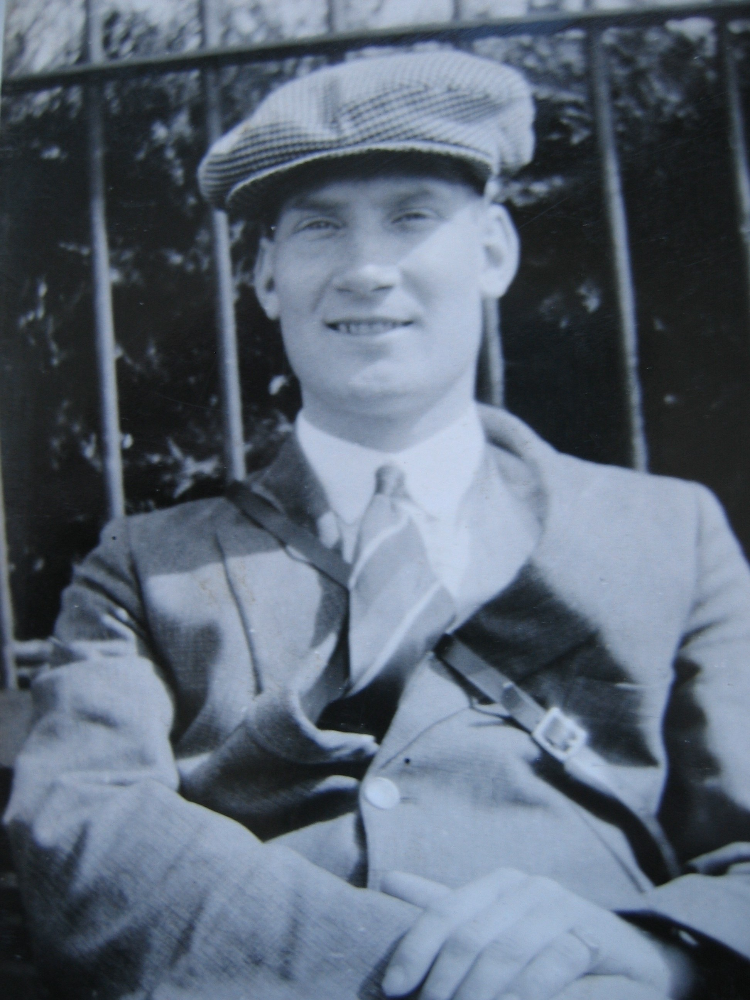
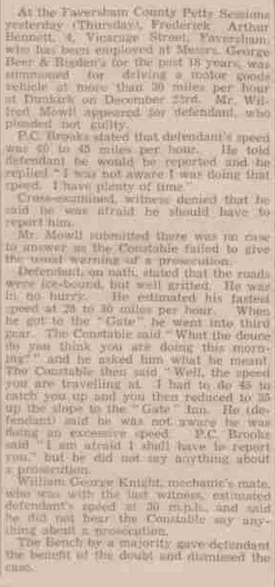

Frederick Arthur Bennett 1906 - 1976
[ Home ] | [ Calendar ] | [ Surnames Index ] | [ Census Index ] | [ Family History ]A brewery maintenance machinist and the 3rd of 4 children of Charles Bennett (a brewer's drayman) and Louisa Jordan, Frederick Bennett, the third cousin once-removed on the mother's side of Nigel Horne, was born in Canterbury, Kent, England on Oct 3, 19061,2,3,4 and baptized there at St Mildred on Oct 21, 1906. He married Elsie Punyer in Sittingbourne, Kent, England around Feb 19566.
During his life, he was living at Claremont Place in Canterbury on Apr 2, 19111; at 4 Vicarage Street, Faversham, Kent in Jan 1939 and on Sep 29, 19392 (when he was living with his); and at 2 Vicarage Street, Faversham, Kent in 1976.
He died on Jul 27, 1976 in Canterbury4,5.
Parents
- Charles John was born on May 27, 1872
- Louisa was born on Jul 30, 1876
Citations
- 1911 Census for England & Wales - Findmypast (was age 4 and the son of the head of the household)
- 1939 Register - Findmypast (was the son of the head of the household)
- England & Wales births 1837-2006 - Findmypast
- England & Wales deaths 1837-2007 - Findmypast
- England & Wales Government Probate Death Index 1858-2019 - Findmypast
- England & Wales Marriages 1837-2005 - Findmypast
Media
Frederick Arthur Bennett

Frederick Arthur Bennett - Probate

Faversham Times and Mercury and North-East Kent Journal - 21 Jan 1939

England & Wales Marriages 1837-2005 - BMD-M-1956-1-AZ-000117-003
England & Wales births 1837-2006 - BMD/B/1906/4/AZ/000046/226
Kent Baptisms - GBPRS/CANT/B/96604065
England & Wales deaths 1837-2007 - BMD/D/1976/3/AZ/000077/146
England & Wales Government Probate Death Index 1858-2019 - GBOR/GOVPROBATE/C/1976-1976/00016589
1939 Register - TNA-R39-1716-1716A-013-22
Family Tree

Generated by ged2site. Last updated on Jun 11, 2024